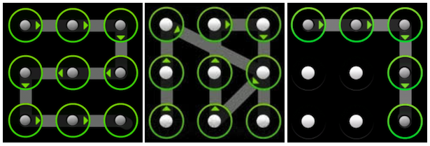
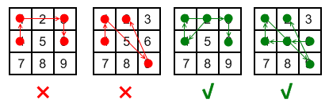

使用过 Android 手机的同学一定对手势解锁屏幕不陌生。 Android 的解锁屏幕由 $3 \times 3$ 个点组成，手指在屏幕上画一条线，将其中一些点连接起来，即可构成一个解锁图案。如下面三个例子所示：

画线时还需要遵循一些规则：
连接的点数不能少于 $4$ 个。也就是说只连接两个点或者三个点会提示错误。
两个点之间的联线不能弯曲。
每个点只能“使用”一次，不可重复。这里的“使用”是指手指划过一个点，该点变绿。
两个点之间的连线不能“跨过”另一个点，除非那个点之前已经被“使用”过。
对于最后一条规则，参见下图的解释。左边两幅图违反了该规则；而右边两幅图（分别为 $2 \rightarrow 4 \rightarrow 1 \rightarrow 3 \rightarrow 6$ 和 $6 \rightarrow 5 \rightarrow 4 \rightarrow 1 \rightarrow 9 \rightarrow 2$）则没有违反规则，因为在“跨过”点时，点已经被使用过了。

现在工程师希望改进解锁屏幕，增减点的数目，并移动点的位置，不再是一个九宫格形状，但保持上述画线规则不变。
请计算新的解锁屏幕上，一共有多少满足规则的画线方案。
输入第一行为一个整数 $n$，表示点的数目。
接下来 $n$ 行，每行两个空格分开的整数 $x_i$ 和 $y_i$，表示每个点的坐标。
输出共一行，为题目所求方案数除以 $100000007$ 的余数。
4 0 0 1 1 2 2 3 3
8
4 0 0 0 1 0 2 1 0
18
对于 $30\%$ 的数据，$1 \le n \le 10$。
对于 $100\%$ 的数据，$-1000 \le x_i ,y_i \le 1000$，$1 \le n < 20$。各点坐标不相同。
 Comet OJ
Comet OJ